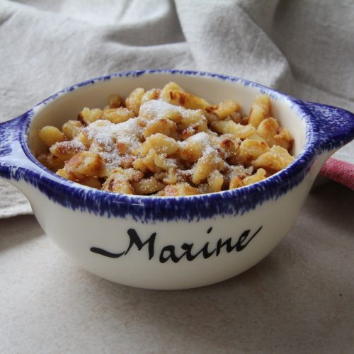

Crepes Like You Have Never Seen Them
Ok, so again, this is a real recipe. I come from a place called Brittany. It's in france but it's better ("Les imbéciles heureux qui sont nés quelque part /
Happy imbeciles born somewhere" as George Brassens said). As far as food go here we are really into salted butter. Crepes is really big it's made either with
buckwheat (but we'll get more into that later) or wheat flour. Buckwheat for salty treats, and plain wheat for sugary. But crepes are so basic right ? That's is where Farz Buen
comes in or as I called them as a kid "Pouloutes" (which is what we also call those little balls of fiber that are on your sweaters). I am talking too
Much ? I feel like I'm talking too much. Basically it's crepe dough bits with powdered sugar on top and it's really the best thing for watching a movie on a rainy
afternoon.
Ingredients
- 250g of flour
- 2 pinches of salt
- 50g of sugar
- 60g of butter (salted to be authentic)
- 4 eggs
- 65cl of milk
- Some more butter for cooking (again make it salted)
- Some powdered sugar to heavily sprinkle on top
Steps
- Mix together the flour, salt and sugar together.
- Add the eggs and the melted butter.
- Little by little add the milk to make a smooth batter.
- Warm up a pan and melt some butter on it, then add some or all of the batter (depending on the size of your pan) and basically make scrambled eggs
(the chunky dry kind).
- So you let it cook, break the big pieces into smaller ones with a wooden spoon. You can add a butter to make them all shiny and golden and litte more crispy.
- I can't tell you more about it, it's something you have to feel. You will know when it is done.
- Put your farz buen into a bowl and sprinkle powdered sugar on top.
- Eat warm.
- Be happy.
The Crepe debate
Some of you will have heard about the "crepe" vs "galette" argument that is splitting the french speaking world as we speak. Take it from me and do no further
research because I refuse to be proven wrong but here is the truth :
- Crepes are made out of wheat. They are mainly sugary but some (slightly strange) people will add
cheese or ham to it.
- Galettes are made out of buckwheat. They are a salty dish. They should NEVER be called crepes
(I know I kind of did it earlier but it's different) and are a breton cuisine staple.
Now you know. Tell your friends.
Alcohol in crepes
It saddens me that this is a thing. Rhum and beer do not taste good. If you tell me you're gonna make me crepes and I bite into the first one and it tastes like
alcohol I will cry.